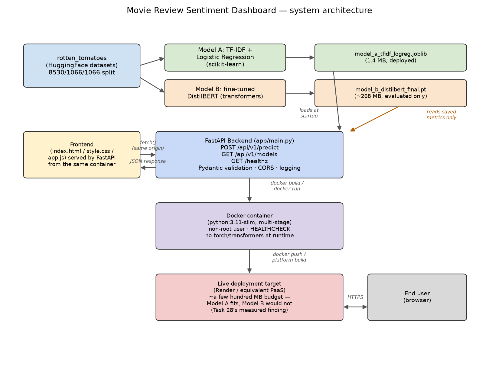

Static vs. contextual embeddings, chosen and measured — not just discussed — then deployed within a real, previously-measured memory constraint.
Abdullah Amir
Static embeddings, classical ML
Contextual embeddings, Transformer
This is Task 27's static-vs-contextual embeddings comparison, applied as a real architectural decision — not a side note.
Task 28's 3-model FastAPI service hit a measured out-of-memory failure on a free-tier host (512MB limit, ~695MB actual footprint). Two "obvious" fixes were tried and measured — both made things worse, not better:
| Mitigation tried | Result |
|---|---|
| bfloat16 weight loading | 998MB (worse than 695MB baseline) |
| Dynamic int8 quantization | 1024MB (worse still) |
This capstone applies that lesson directly: deploy the model that's small by architecture, not by attempted compression after the fact.
Full numbers, curves, and error analysis in FINAL_REPORT.md.
$ docker run --memory=512m ... capstone-sentiment-api:local
CONTAINER MEM USAGE / LIMIT MEM %
capstone-test 113MiB / 512MiB 22.07%
Under the exact memory cap that OOM'd Task 28's service, this container uses 22% of the budget — verified by actually running it capped, not estimated.
Then actually deployed to that same free tier and hit live: day29-sentiment-dashboard.onrender.com — succeeded on the first attempt, no mitigation needed.

datasets's Column wrapper object passed
the tokenizer's isinstance(x, list) check when sliced (masking the bug in a quick benchmark)
but failed on the full dataset — fixed with an explicit list() coercion at the source.backend/app/main.py, 3 levels above repo root) silently resolved wrong inside the
container's flatter layout (/app/app/main.py) — fixed with explicit environment-variable
overrides set in the Dockerfile itself./healthz correctly reported model_loaded=False) — fixed the test harness to
match real server behavior, and used the fix as an opportunity to migrate off FastAPI's deprecated
on_event API.Thank you. Live demo and code: see README.md.